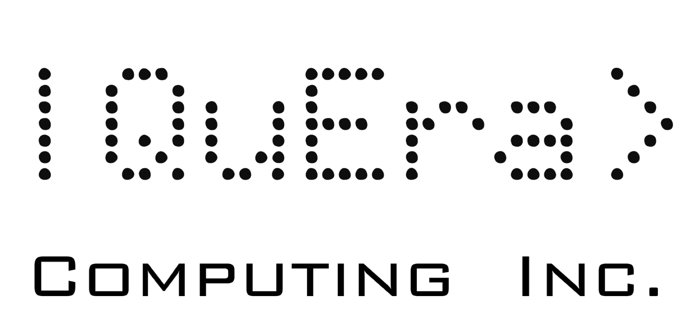
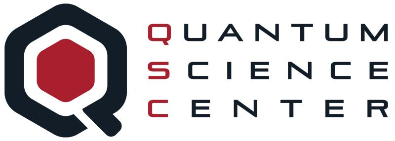

Welcome!

Blake Wilson, Ph.D.
Hello! I'm Blake Anthony Wilson. I analyze algorithms and build machine learning architectures for physics and engineering applications. I earned my Ph.D. from Purdue University in ECE working with Sabre Kais, Sasha Boltasseva, Vlad Shalaev and Alex Kildishev. I'm currently at Quantinuum in Oxford working on quantum machine learning and natural language processing algorithms.
Projects
Polytensor
Python package for CUDA-accelerated, autograd friendly polynomial evaluation.
nanomcmc
Python package for CUDA-accelerated, autograd friendly MCMC.
Pauli
Symbolic Pauli algebra interpreter and compiler in Python.
Collaborations

